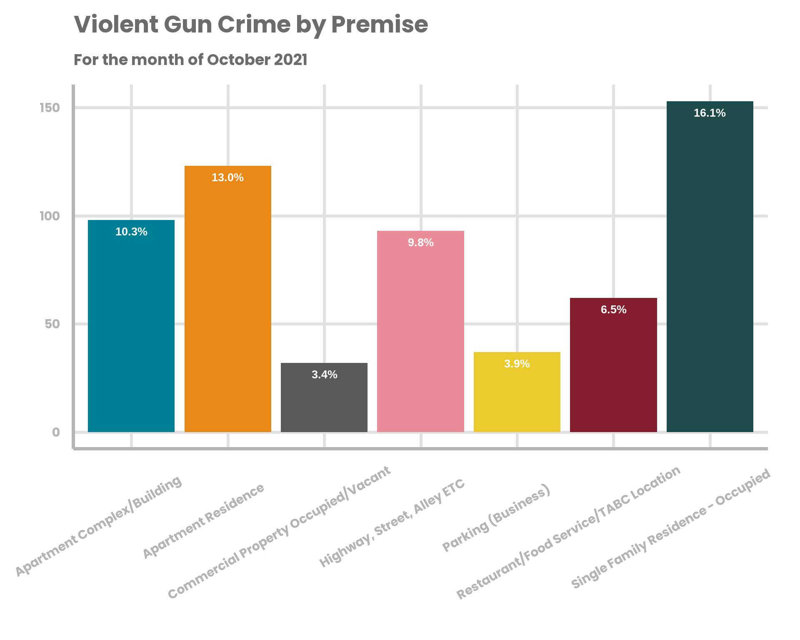

Dallas Police Department Incident Report
City of Dallas
Select Group A Incidents Overview
Incidents Over Time
Line Graph of Total Incidents Over Time
Line Graph of Incidents by Time of Day
Violent Gun Crime Rate
Change in Violent Gun Crime
Typology of Incidents
Incidents by Location of Incident
Incident Victims
Incidents by Race of Victim
Incident Arrests
Division
0.1
Select Group A Incidents by Division
Generated by CPAL
Github Repository
null
Incident Victims
Incidents by Race of Victim
